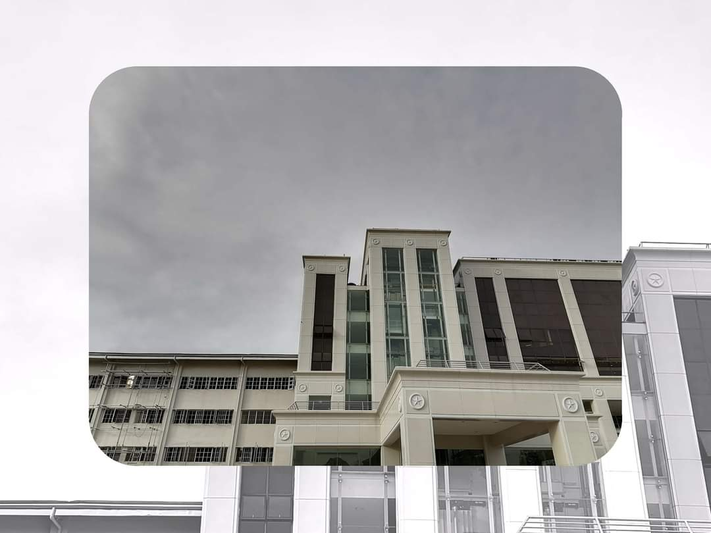
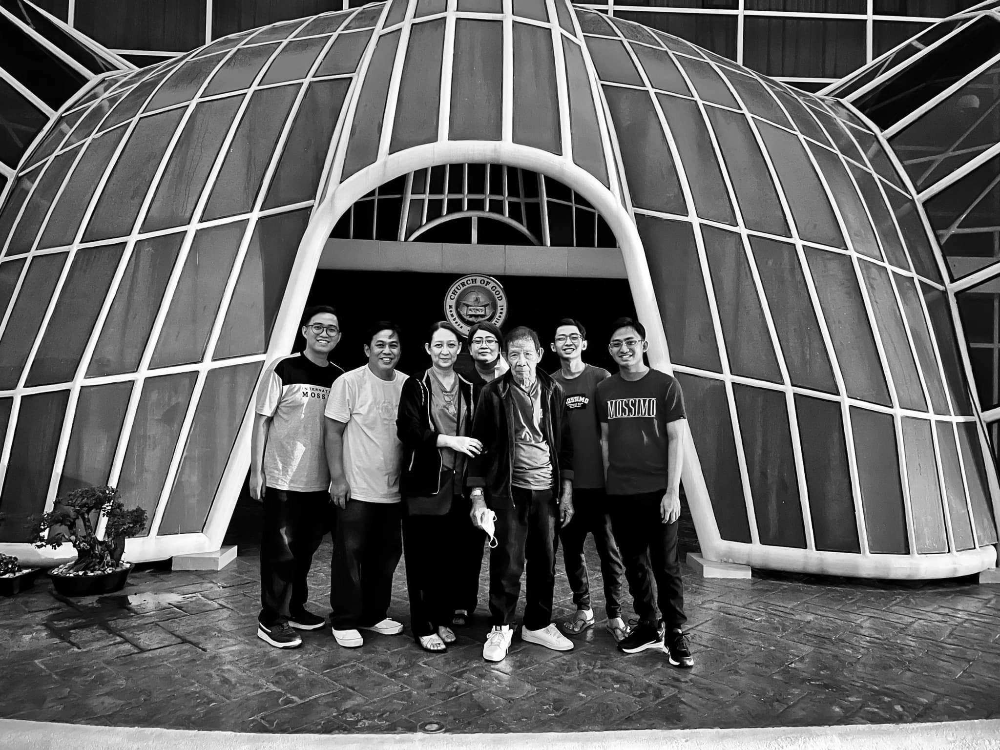
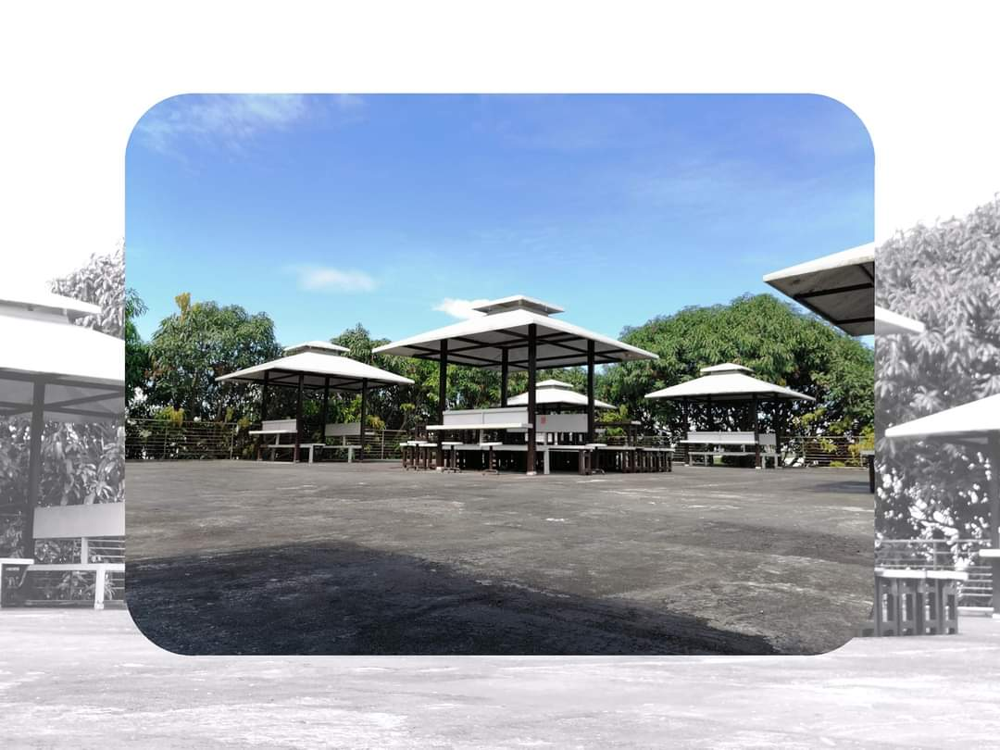
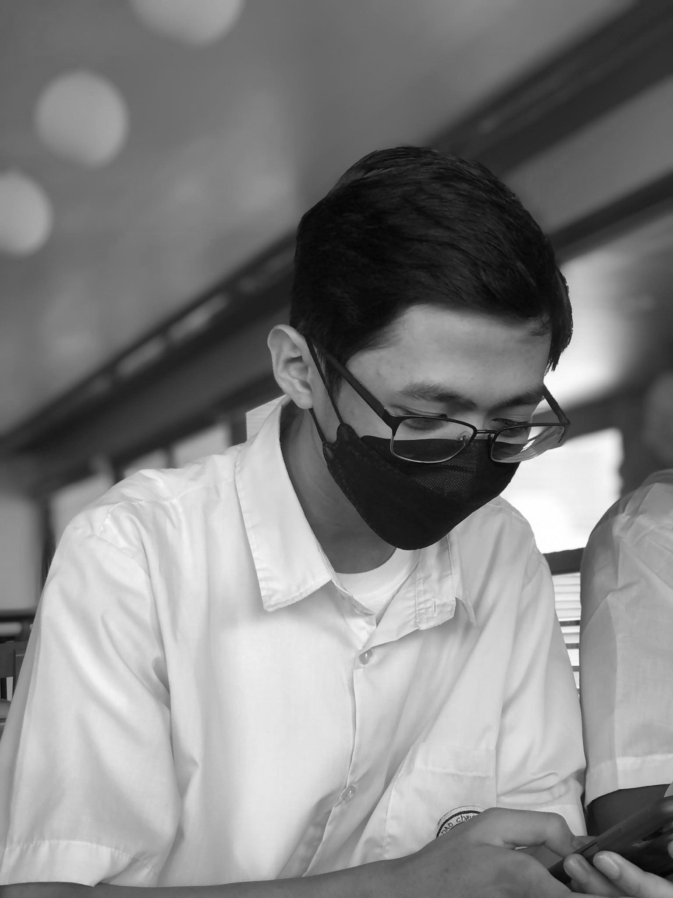
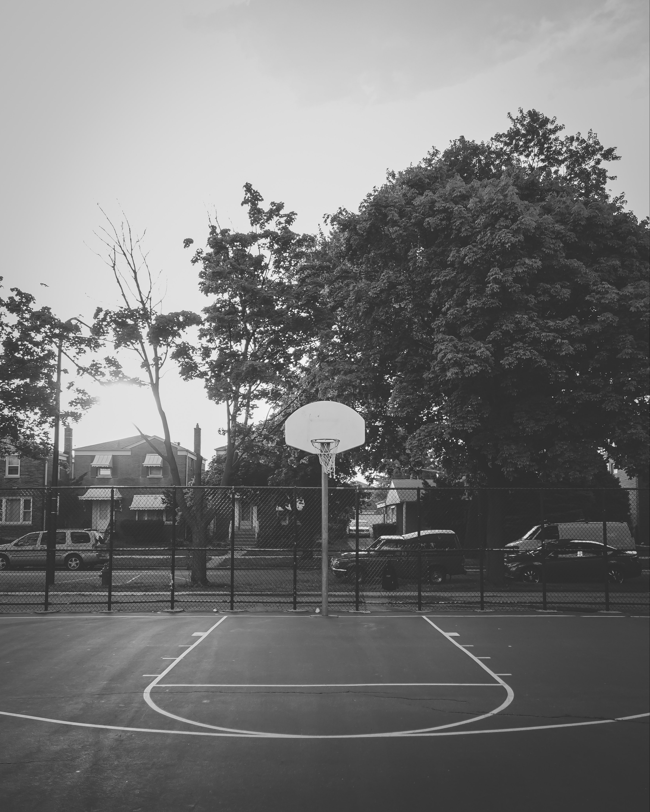
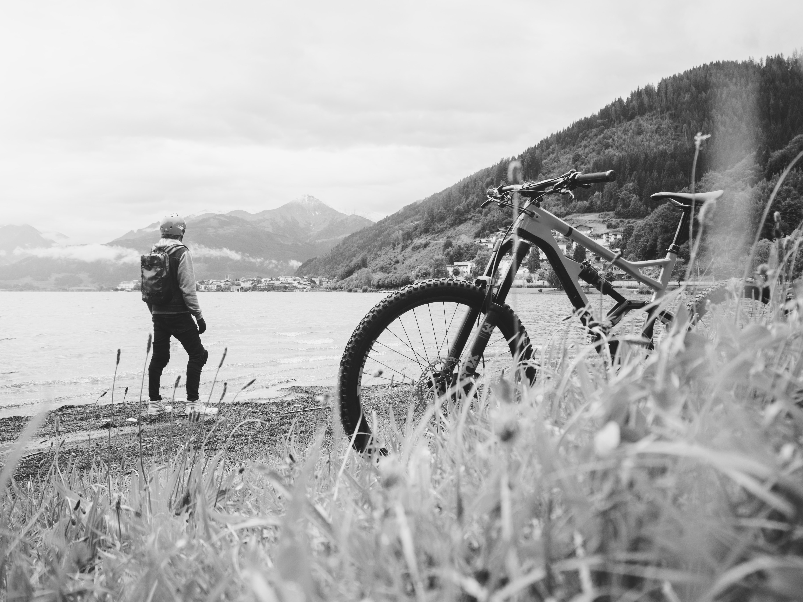
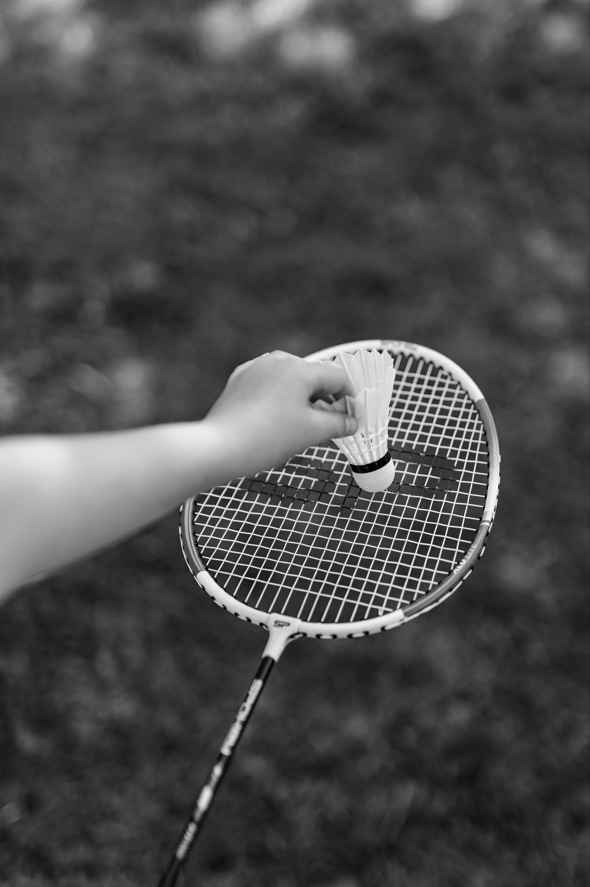
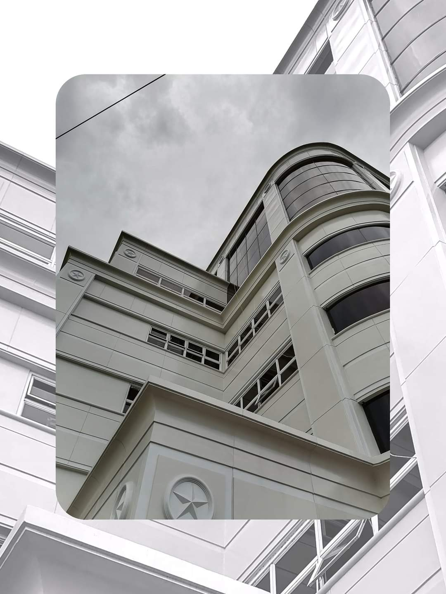

My name is
John Carlo DigaBasketball
Cycling
Photographer




About Me
My name is John Carlo F. Diga, born in October 18, 2002. Studying in Laverdad Christian College - Apalit. When i was young i'm used to challenge myself to experience some things that i want to know and to able to understand things deeply.
Currently taking the course of Associate in Computer Technology. Is a 2 years course.

Basketball
I learned playing basketball when i
was 3 years old.

Cycling
I love cycling because it makes
me feel at ease.


La Verdad Christian College - Apalit
A private non-stock, non-sectarian educational institution established in Apalit, Pampanga, Philippines. It is the first private school in the Philippines that grants scholarship programs to deserving students by providing tuition-free education and no miscellaneous fees.
Badminton
I like to play badminton
in the future events in LVCC.

"Photography is a way of feeling, of touching, of loving. What you have caught on film is captured forever… It remembers little things, long after you have forgotten everything."
Manifesting to be a
Photographer soon!

Contact
Me
Address
Monserrat Subdivsion, Santa Cruz Laguna
Email
jcfdiga@gmail.com
Phone
09562153645